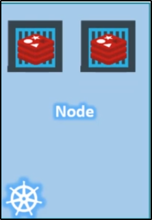

Nodo (vecchio slang: Minion):
Macchina, fisica o virtualizzata, dove Kubernetes è installato.
Il nodo è una macchina working, ovvero dove i containers
verranno lanciati da Kubernetes.

Che succede se il nodo va down?
Ovviamente l'applicazione va down.
Per questo necessiti più di un nodo.
Cluster:
Un Cluster è un insieme di nodi che lavorano assieme.
In questo modo, anche se un nodo va in fail,
l'applicazione rimane accessibile tramite altri nodi.
Avere più nodi aiuta anche per il load-balancing.
Master:
Chi gestisce un Cluster?
Dove sono salvate le informazioni dei membri di un cluster?
Come sono monitorati i nodi?
Quando un nodo fallisce, come muovi il suo workload da un node ad un altro?
Il Master è un altro nodo con sopra Kubernetes, identificato come Master.
Il Master Node monitora gli altri nodi del cluster ed è il responsabile per
l'orchestrazione dei container nei worker nodes.
Quando installi Kubernetes su una macchina, installi le seguenti componenti:
Un API Server
Il service "etcd"
Il service "kubelet"
Un Container Runtime
Un Controller
Degli Schedulers
API Server: Fanno da frontend per Kubernetes.
Gli utenti, i management devices, le CLIs (Command Line Interfaces)
tutte parlano con le API Server per interagire con il cluster Kubernetes.
etcd Key Store: E' un store distribuito ed affidabile di elementi chiave-valore.
Serve a salvarsi tutti i valori per gestire il cluster.
Quando vi sono differenti Nodes e Masters nel tuo cluster,
il servizio etcd conseva tutte le informazioni sui nodi in modo distribuito.
etcd è responsabile dell'implementazioni di locks nel cluster,
in modo da assicurarsi di non creare conflitti tra i Masters.
Scheduler:
E' responsabile per la distribuzione del lavoro o containers su più nodi.
Cerca container nuovi creati e li assegna ai nodi.
Controller:
Sono il "cervello" dietro l'orchestrazione. Sono responsabili nel riconoscere e rispondere quando
nodi, container o endpoints vanno down.
I Controller decidono di creare nuovi container in questo caso.
Container Runtime: E' il software sottostante usato per runnare i containers.
Nel nostro caso, Docker (anche se vi sono altri tool di containerizzazione).
Kubelet:
E' un agent che runna in ogni nodo del cluster. L'agent è responsabile dei container, per fa si che runnino
sui nodi come ci si aspetti.
Master vs Worker nodes
Fino ad ora, abbiamo visto 2 tipi di server.
I Master ed i Worker sono alcune componenti che compongono Kubernetes. Una domanda sorge spontanea: come un server diventa Master o Slave? Worker Node: I Worker Node (o Minion) sono dove vengono hostati i container (e.g. Docker).
Per runnare i container di Docker su un sistema, abbiamo la necessità
di aver installato Container Runtime (nel nostro caso, Docker oppure altri come Rocket or Cryo).
Master Node:
Il Master Node ha il API Server ed è questo che lo rende "Master".
Il Worker Node ha il Kubelet agent, responsabile per l'interazione
con il Master, al fine di provvedere informazioni al Master e
per eseguire azioni del Master sui Worker Nodes.
Tutte le informazioni ottenute sono conservate in una coppia chiave-valore nel Master (nel nostro caso in etcd)
Inoltre, il Master ha anche il Controller e Scheduler.
Kubectl
Kubectl (o Kube Control) è un Kubernetes Command Line Tool.
Kubectl è usato per deployare e gestire applicazioni su un cluster Kubernetes.
Questo tool serve per:
Ottenere info sul cluster
Status degli altri nodi del cluster
Gestione di vari elementi
Esempio:
Il comando "run" è usato per deployare un applicazione sul cluster.
Il comando "cluster-info" è usato per ottenere informazioni sul cluster.
Il comando "get nodes" è usato per ottenere tutti i nodi di un determinato cluster.